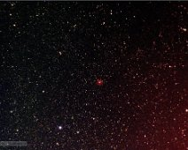

{kind=link}
California Nebula - smoothed
This is a slightly smoothed version of the California nebula. This process reduces noise in the nebulosity and also reduces the hot pixel artifacts. Atik CCD…
{kind=link}
California nebula - rotated
This version of the California nebula is rotated so that it better resembles the state of california when North is up. Atik CCD on 80 mm apo.
{kind=link}
California Nebula
The California Nebula in Perseus taken with the Atik CCD with RGB filters on the 80 mm Apo. This nebula is about 5 full moons long, but it is too faint to see…
{kind=link}
Cone Nebula
The Cone Nebula, also known as NGC 2264. The red line visible through the picture is due to a satellite passing through the field of view during the red filter…
{kind=link}
Cone Nebula
The Cone nebula (LDN 1613) is a dark, cone-like feature to the
right of center. The center has a brighter, reddish emission nebula called NGC 2264 or the fox…
right of center. The center has a brighter, reddish emission nebula called NGC 2264 or the fox…
{kind=link}
M27
M27, the Dumbbell Nebula in Vulpecula.
One of the better pictures taken with the Meade DSI II CCD. Used the Meade 80mm apochromatic refractor. Color is…
One of the better pictures taken with the Meade DSI II CCD. Used the Meade 80mm apochromatic refractor. Color is…
{kind=link}
M27 - Dumbbell Nebula
M27, the Dumbbell Nebula in Vulpecula.
Atik 383L CCD on the Celestron 11-inch using RGB filters.
Atik 383L CCD on the Celestron 11-inch using RGB filters.
{kind=link}
M27 - G filter.
Messier 27, the Dumbell Nebula in Vulpecula. This is one of the brightest examples of planetary nebulas in the sky. This is an image taken through the G…
{kind=link}
Messier 27 - red filter.
Messier 27, the Dumbell Nebula in Vulpecula. This is an image taken through the R (green) filter of the Atik CCD camera on the Celestron C11. Quickly blink…
{kind=link}
Eskimo Nebula
The Eskimo Nebula - a planetary nebula in Gemini.
This faint, outer shell is reminiscent of the hood of a winter parka.
Taken in 2011 using the DSI II CCD on…
This faint, outer shell is reminiscent of the hood of a winter parka.
Taken in 2011 using the DSI II CCD on…
{kind=link}
Eskimo Nebula
The Eskimo Nebula, a planetary nebula in the constellation of Gemini, aka Caldwell 39 or NGC 2392. Taken with the Canon T5i on 2019-03-25.
{kind=link}
Flame and Horsehead Nebulae
The Flame Nebula and Horsehead Nebula are two nebulae in the Orion Molecular Complex. The Flame Nebula is in the lower center, and the Horsehead Nebula is to…
{kind=link}
Horsehead and Flame nebulae.
The Horsehead Nebula is oriented so that the horse looks upright in this rotated image. The Flame nebula is below the bright star Alnitak.
{kind=link}
The Horsehead nebula and Alnitak
The bright star Alnitak (below center) is one of the three stars in the belt of Orion. Just to its right is the Flame Nebula, and above it is the Horsehead…
{kind=link}
Flame and Horsehead Nebulae
The Flame Nebula (left) and Horsehead Nebula (center, barely visible) in Orion. The bright star is Alnitak.
This is only an 90 second exposure, ISO 800, using…
This is only an 90 second exposure, ISO 800, using…
{kind=link}
Flaming Star Nebula
The Flaming Star Nebula (IC 405), in the constellation Auriga. North is up and east is to the left. Taken with Atik 383L on Meade 80mm Apochromatic Reflector.
{kind=link}
Messier 8 and surroundings.
Messier 8 (or the Lagoon nebula) in Sagittarius. This is an emission nebula near a star cluster. This is only a 30 second exposure with the Canon T5i on the…
{kind=link}
Lagoon and Trifid Nebulas
The Lagoon Nebula (M8, right) and the Trifid Nebula (M20, left) in Sagittarius. The colors are not quite accurate.
Atik 383L CCD through RGB filters on the 80…
Atik 383L CCD through RGB filters on the 80…
{kind=link}
M76
M76, the Little Dumbbell nebula. Named after M27, the Dumbbell Nebula, which has a similar appearance. Both are planetary nebulas, the remnants of stars that…
{kind=link}
Omega Nebula (M17).
The Omega Nebula (or Messier 17) in the constellation Sagittarius. This was a single, 30 second exposure, taken with the Canon T5i on the Meade apochromatic…
{kind=link}
M17 - Omega Nebula
The Omega Nebula (or "Swan Nebula"), Messier 17 in Sagittarius.
Atik 383 L CCD on the Celestron 11-inch.
Atik 383 L CCD on the Celestron 11-inch.
{kind=link}
The Great Orion Nebula and surroundings.
M42, the Great Orion Nebula. A wide field view with North to the left instead of the usual orientation. The star clusters make up the sword of Orion.
Canon T5i (90 sec) on the Meade 80 mm apochromatic refractor.
Canon T5i (90 sec) on the Meade 80 mm apochromatic refractor.
{kind=link}
Messier 42 in Orion's belt
Messier 42, or the Great Orion Nebula, in Orion's belt. This is a "deeper" exposure bringing out more of the faint nebulosity. The bluish reflection nebula above M42 is NGC 1975. North is up and East to left.

Messier 42 in Orion's belt
Messier 42, or the Great Orion Nebula, in Orion's belt. North is up and E to left.
Taken with the Atik 383L+ CCD through RGB filters on the Meade 80 mm refractor.
Taken with the Atik 383L+ CCD through RGB filters on the Meade 80 mm refractor.
{kind=link}
M42 close-up.
M42, the Great Orion Nebula, close-up which almost resolves the central "trapezium" stars.
Taken with the Canon T5i on the Celestron C11.
Taken with the Canon T5i on the Celestron C11.

M97- Owl Nebula
M97- Owl Nebula. This planetary nebula gets its name from the "eyes" that give it the appearance of an owl's face.
Meade DSI II CCD, Meade 80mm apochromatic…
Meade DSI II CCD, Meade 80mm apochromatic…
{kind=link}
M45 the Pleiades star cluster.
M45 the Pleiades star cluster in Taurus. Rotated so that North is up. The blue reflection nebula is barely visible, especially below the bright star just below…

{kind=link}
NGC 1624 - young star cluster
NGC 1624, a young star cluster in an emission nebula in Perseus. The age is estimated at only 4 million years; the stars have not blown away the cloud that…
{kind=link}
NGC 1624 - young star cluster
A closer look at the NGC 1624 star cluster embedded in its red, emission nebula. In Perseus. Made using R, G, and B filters on the Atik CCD.
{kind=link}
NGC 281 - star cluster and nebula.
NGC 281 is the nebula associated with the star cluster IC 1590 in the constellation Cassiopeia. Taken with the Atik CCD using RGB filters and the Meade…
{kind=link}
M57
M57, the Ring Nebula.
Taken with the old Canon Digital Rebel XT on the Meade 12-inch while experimenting with a field flattener in 2007.
Taken with the old Canon Digital Rebel XT on the Meade 12-inch while experimenting with a field flattener in 2007.
{kind=link}
M57
M57, the Ring Nebula in Lyra. This is one of the brightest and best known of the planetary nebulas. These nebulas are stars which have ejected their outer…
{kind=link}
Rosette Nebula in Monoceros.
The center of the Rosette Nebula showing the star cluster but excluding much of the large ring of nebulosity.
DSI II CCD, saved in black and white, taken…
DSI II CCD, saved in black and white, taken…
{kind=link}
Rosette Nebula
Rosette Nebula in the constellation Monoceros. This is a faint, red HII nebula with a cluster of stars at the center. Combined R, G, and B frames from the…

Rosette Nebula in Monoceros.
The Rosette Nebula, NGC 2237. This emission nebula is associated with the grouping of hot young stars in the center. N is up in this image.
Atik 343L CCD on…
Atik 343L CCD on…
{kind=link}